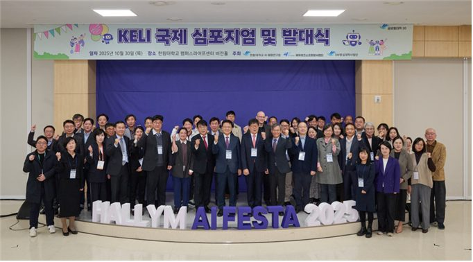

한림대학교, AI 교육혁신 연합체 ‘KELI’ 출범… AI 교육 미래, ‘AI 캠퍼스 연합(AI Campus Alliance)’ 비전 제시
2025.10.30 · 한림대학교 커뮤니케이션팀 · 원문 보기
- AI 교육혁신 연합체 KELI(K-University AI Edutech and Learning Initiative)
- 글로컬대학30 핵심, 대학·산업 경계 허문 AI 고등교육 생태계 구축
- 부산대, 서울시립대, 아주대 등 전국의 24개 대학이 컨소시엄 형태로 참여

한림대학교(총장 최양희)는 30일 교내 캠퍼스라이프센터에서 ‘KELI 국제 심포지엄 및 발대식’을 열고, 대학과 산업의 벽을 허물어 AI 기반 교육 혁신을 선도할 개방형 연합 ‘K-University AI Edutech and Learning Initiative(KELI)’의 공식 출범을 선언했다.
학령인구 감소와 디지털 대전환의 파고 속에서 대한민국 고등교육의 미래를 제시할 국가적 협력체의 등장을 알린 것이다.
교육부의 ‘글로컬대학30’ 사업의 핵심 과제로 추진되는 KELI는 단일 대학의 힘만으로는 감당하기 어려운 AI 교육 시스템의 개발과 확산을 위해 국가적 ‘공유·협력·개방’ 생태계를 구축하는 것을 목표로 하며, 이날 행사에는 국내외 주요 대학과 AI·에듀테크 기업, 연구기관 관계자들이 참석해 AI 시대 고등교육의 대전환을 위한 첫걸음에 힘을 보탰다.
최양희 한림대 총장은 축사에서 “KELI는 대학 간 경쟁을 넘어 공유와 협력의 가치를 바탕으로 AI 캠퍼스 연합(AI Campus Alliance)을 함께 만들어가는 협력의 출발점”이라고 강조했다.
KELI의 지향점은 처음부터 세계 무대를 겨냥하고 있으며, 이날 심포지엄의 기조연설을 맡은 글로벌 교육 기술 표준 컨소시엄 ‘1EdTech’의 최고 아키텍트(Chief Architect) 팀 쿠퍼(Tim Couper)는 온라인 연설을 통해 “교육에서의 AI 활성화를 위해서는 국제 표준이 핵심적 역할”을 한다고 역설하며, KELI가 구축할 플랫폼의 글로벌 상호운용성 확보가 중요함을 시사했다.
또한, 독일 오스트팔리아 응용과학대의 토르스텐 잔더(Torsten Sander) 교수는 ‘한림대 AI 수학 튜터의 독일 대학 적용 사례’를 발표해 참석자들의 이목을 집중시켰다.
국내 대학이 개발한 AI 교육 솔루션이 이미 유럽의 교육 현장에서 그 효과성을 입증받았다는 사실이 공개되자, ‘K-에듀테크’의 수출 가능성에 대한 기대감을 높였다.
이 밖에도 네덜란드 헤이그 응용과학대의 클라우디아 디어스-리엔케(Claudia Diers-Lienke) 교수, KAIST 김재철AI대학원의 최윤재 교수 등이 연사로 나서 AI 교육의 글로벌 동향과 미래 방향성을 제시했다.
KELI의 가장 큰 동력은 ‘개방성’에 기반한 강력한 연합 생태계인데, 특히 KELI의 비전을 현실로 구현하고 전국적으로 확산시키는 핵심 동력은 교육부와 한국교육학술정보원(KERIS)이 주관하는 ‘고등교육 에듀테크 소프트랩’ 사업이다.
한림대는 이 사업의 운영대학으로서, AI 코스웨어 개발과 현장 적용을 총괄하는 허브 역할을 수행한다.
여기에는 한림대뿐만 아니라 부산대, 서울시립대, 아주대, 인하대, 제주대, POSTECH등 전국의 24개 대학이 컨소시엄 형태로 참여하고 있으며, 이들 대학은 향후 KELI를 통해 개발된 AI 교육 서비스와 코스웨어를 각 대학의 실제 강의에 선도적으로 도입하고, 그 효과를 공동으로 검증해 나갈 계획이다.
산업계의 참여 또한 견고하다.
유비온, ㈜슈퍼러닝, 클라썸, 프리윌린, 플랭, HM COMPANY 등 국내 AI 및 에듀테크 기업들이 기술 파트너로 대거 참여한다.
학계에서는 전국 51개 대학이 참여하는 SW중심대학협의회의 신용태 회장(숭실대 교수)과 송오영 세종대 SW중심대학 사업단장 등이 이날 발대식에 참석해 KELI와의 협력 방안을 모색하며 힘을 보탰다.
고영웅 KELI 준비위원장은 “학습자 중심의 초개인화 교육, 대학 간 경계를 허무는 데이터와 서비스 공유를 통해 KELI가 만들어갈 놀라운 미래를 함께 만들어가자”며 전국의 대학과 기업들의 동참을 촉구했다.
한림대에서 시작된 KELI가 대한민국 고등교육의 체질을 바꾸고, 나아가 ‘K-University’라는 이름으로 세계 고등교육의 표준을 제시하는 혁신의 진원지가 될 수 있을지 교육계의 관심이 집중되고 있다.
출처: 한림대학교 홍보 보도자료.
본문과 사진의 저작권은 한림대학교에 있습니다.